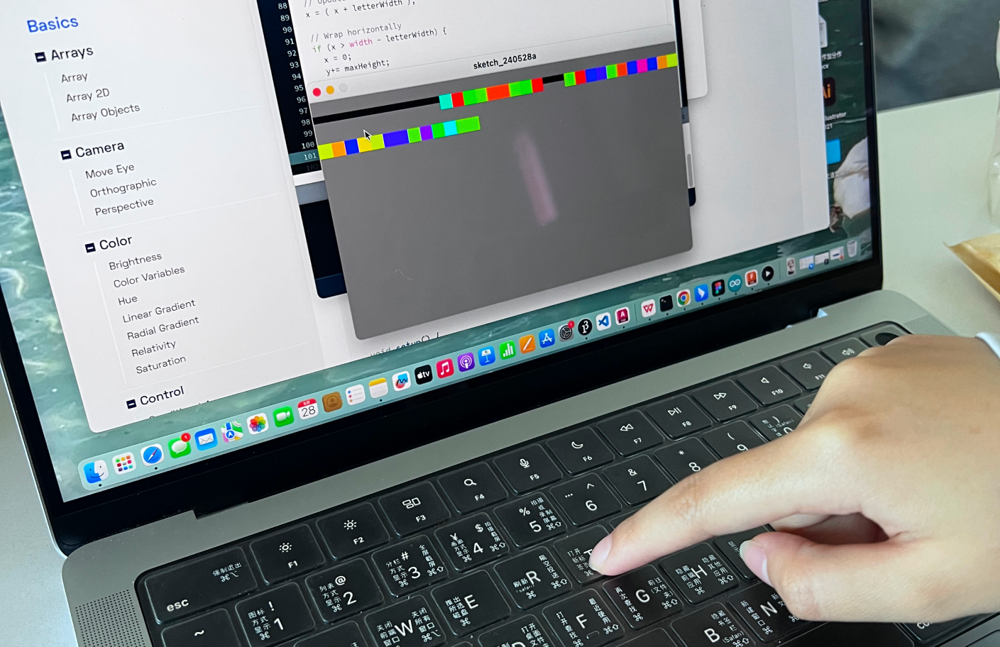
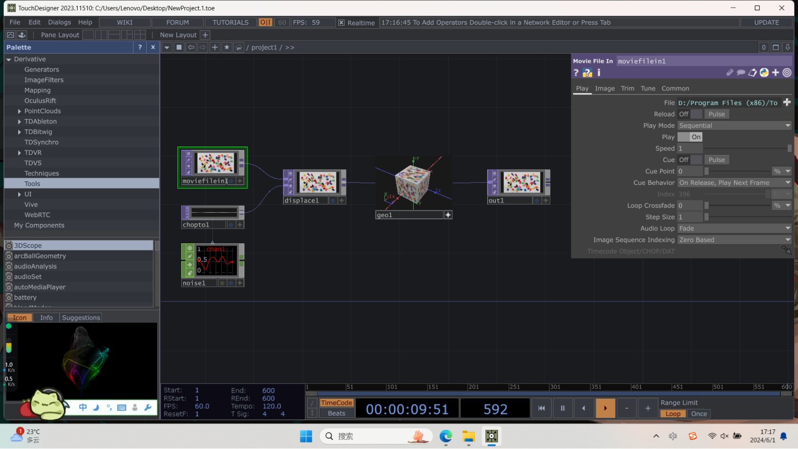
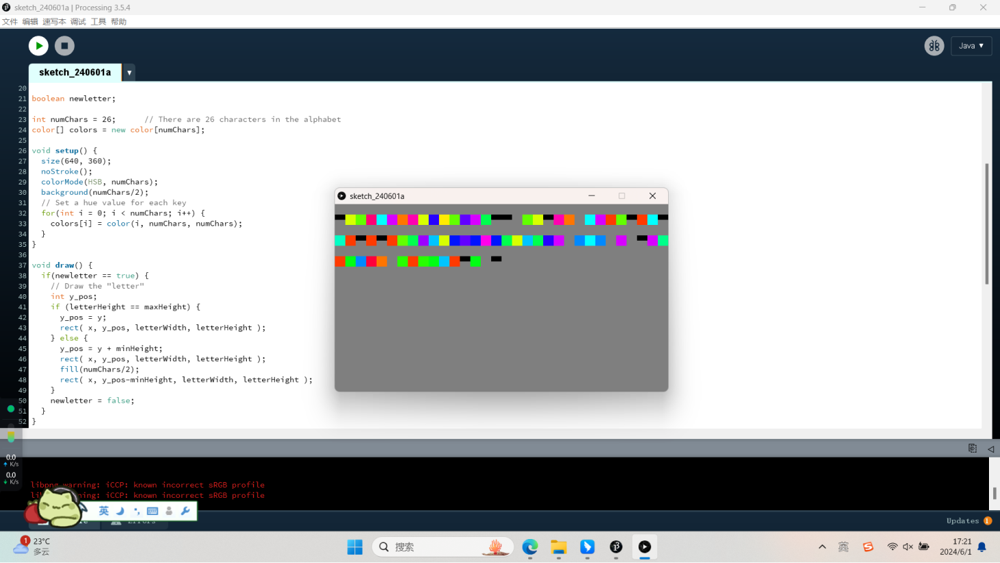
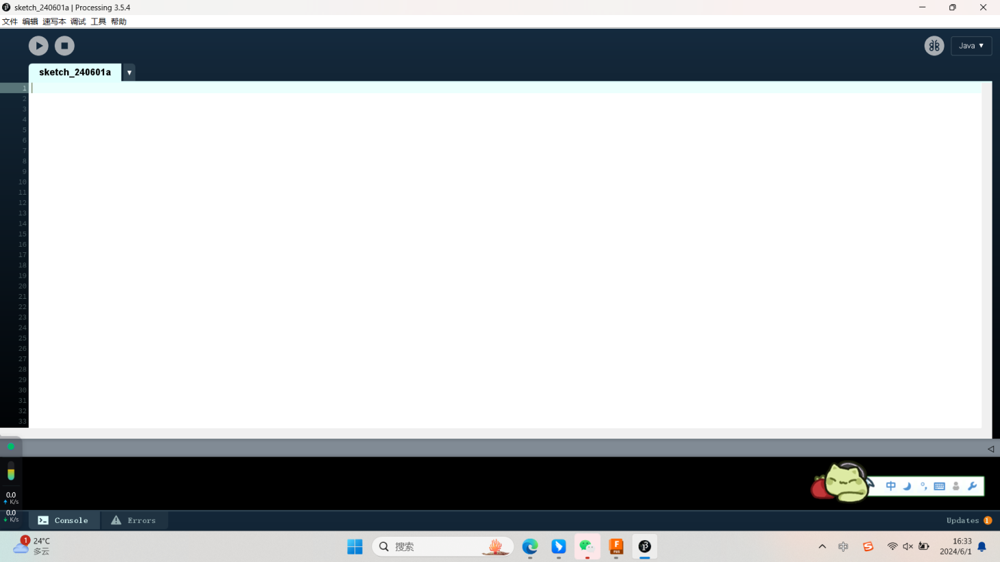
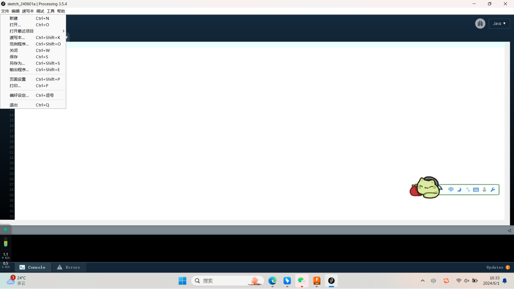
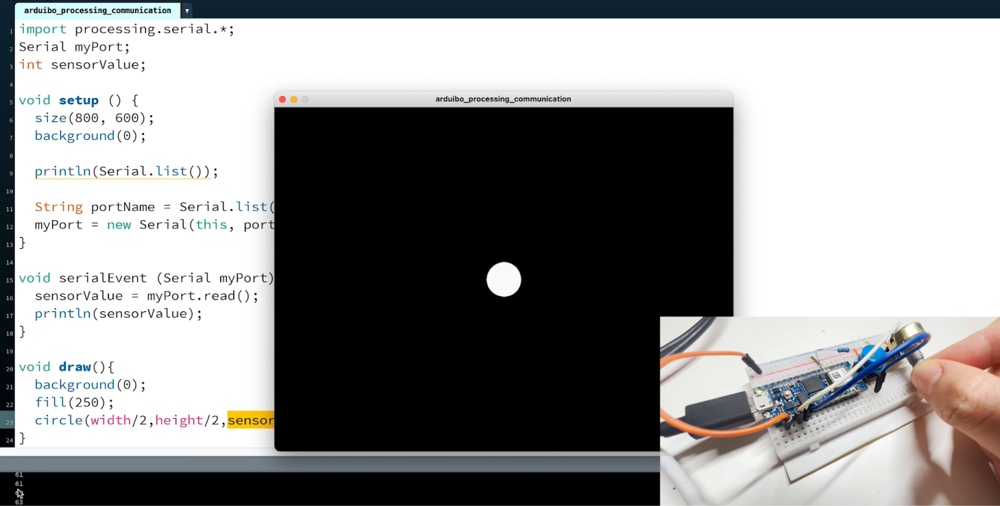
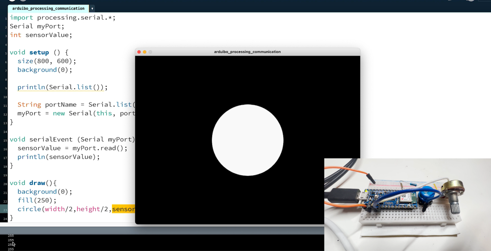
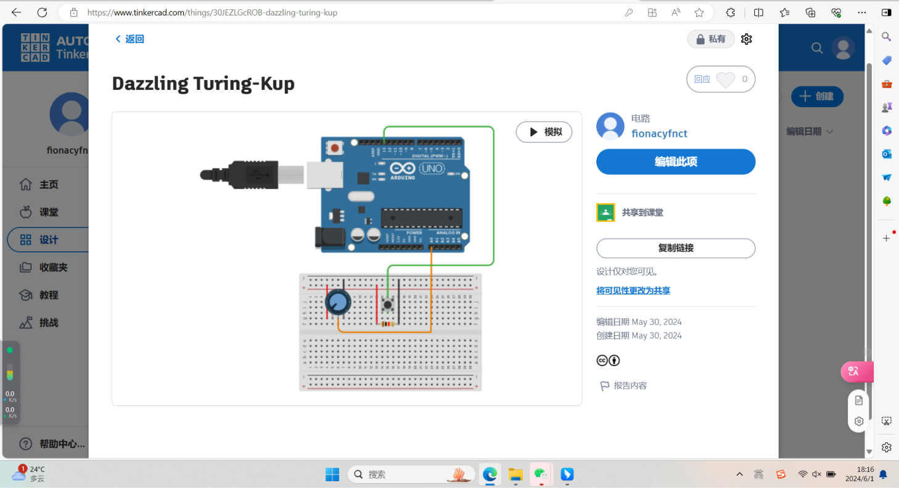
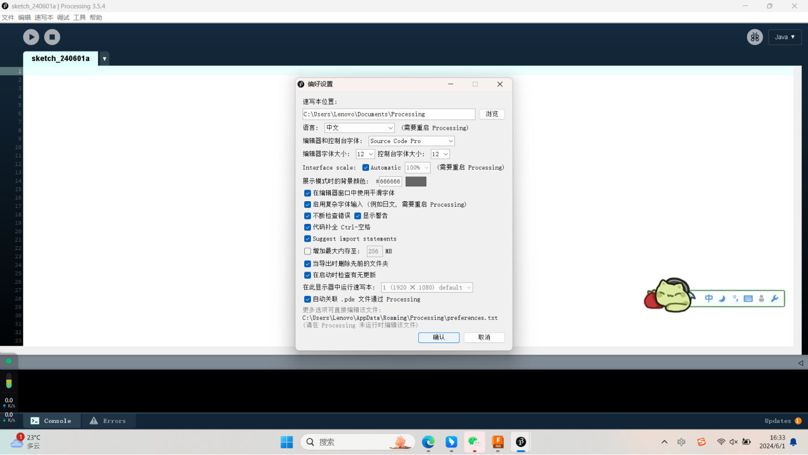

Interface application programming
The circle of processing is controlled according to the size of the Arduino
motor.
Code：
Analog circuit connection：
Effect display:
/**
* Keyboard Functions
* by Martin Gomez
*
* Click on the window to give it focus and press the letter keys to type
colors.
* The keyboard function keyPressed() is called whenever
* a key is pressed. keyReleased() is another keyboard
* function that is called when a key is released.
*
* Original 'Color Typewriter' concept by John Maeda.
*/
int maxHeight = 40;
int minHeight = 20;
int letterHeight = maxHeight; // Height of the letters
int letterWidth = 20; // Width of the letter
int x = -letterWidth; // X position of the letters
int y = 0; // Y position of the letters
boolean newletter;
int numChars = 26; // There are 26 characters in the alphabet
color[] colors = new color[numChars];
void setup() {
size(640, 360);
noStroke();
colorMode(HSB, numChars);
background(numChars/2);
// Set a hue value for each key
for(int i = 0; i < numChars; i++) {
colors[i] = color(i, numChars, numChars);
}
}
void draw() {
if(newletter == true) {
// Draw the "letter"
int y_pos;
if (letterHeight == maxHeight) {
y_pos = y;
rect( x, y_pos, letterWidth, letterHeight );
} else {
y_pos = y + minHeight;
rect( x, y_pos, letterWidth, letterHeight );
fill(numChars/2);
rect( x, y_pos-minHeight, letterWidth, letterHeight );
}
newletter = false;
}
}
void keyPressed()
{
// If the key is between 'A'(65) to 'Z' and
'a' to 'z'(122)
if((key >= 'A' && key <= 'Z') || (key
>= 'a' && key <= 'z')) {
int keyIndex;
if(key <= 'Z') {
keyIndex = key-'A';
letterHeight = maxHeight;
fill(colors[keyIndex]);
} else {
keyIndex = key-'a';
letterHeight = minHeight;
fill(colors[keyIndex]);
}
} else {
fill(0);
letterHeight = 10;
}
newletter = true;
// Update the "letter" position
x = ( x + letterWidth );
// Wrap horizontally
if (x > width - letterWidth) {
x = 0;
y+= maxHeight;
}
// Wrap vertically
if( y > height - letterHeight) {
y = 0; // reset y to 0
}
}
1.The basic knowledge about processing：
Processing is a flexible software sketchbook and a language for learning how
to code within the context of the visual arts. It simplifies the process of
creating visual art through code by providing a straightforward and
approachable framework, making it popular among artists, designers, and
educators.
Here is the official website:https://processing.org
1-1 Introduction to the work area in processing
a. Menu bar: located at the top of the window, it contains commonly used
function buttons, such as documents, sketches, etc
b. Code area: This is the main area of coding where users can write and edit
Processing code.
c. Output area: located below or next to the editing area, it is used to
display the output information of the program, such
as the result of printed statements, error information and debugging
information.
d. Mode selection: Processing provides two modes: Java mode and JavaScript
mode. Java pattern is used for traditional desktop
application development, while JavaScript pattern is used for Web
development. Users can switch modes in the toolbar or menu.
e.Start&Stop: Start/Stop running the program
a. New File: Clicking will create a new window with a new, empty editing
area where you can start writing new code.
b. Sample programs: Usually contains a number of preset sample programs that
demonstrate various programming concepts and
techniques. Users can select these sample programs to learn and understand
how Processing works.
c. Preferences: Preferences allow users to configure various parameters of
the Processing IDE according to their preferences
and needs.
Preference Settings:You can change the editor's fonts, languages, color
themes, code indent Settings, and more.
2.New tool similar with processing:
3.Processing use keyboard to interactive:
3.Processing use keyboard to interactive:
Touch Designer
Introduction:
Code:
Here is the official website:https://derivative.ca/download
TouchDesigner is a visual development platform designed for creating
interactive multimedia content. Developed by Derivative, it is widely used
in the fields of interactive art, live performances, and immersive
installations. TouchDesigner enables artists, designers, and developers to
create real-time visuals by connecting nodes in a graphical interface,
allowing for complex interactions and multimedia experiences without the
need for extensive coding.





e.Start&Stop
d.mode selection
b.Code area
c.Output area
a.New File
b.Examples
c.Preference
4.Processing with Arduino:
Introduction:
Processing code
Arduino code
int potPin=A0;
int potValue=0;
void setup() {
Serial.begin(9600);
}
void loop() {
potValue=analogRead(potPin);
potValue=map(potValue,0,1024,0,256);
//Serial.println(potValue);
Serial.write(potValue);
}
import processing.serial.*;
Serial myPort;
int sensorValue;
void setup(){
size(800,600);
background(0);
println(Serial.list());
String portName=Serial.list()[3];
myPort=new Serial(this,portName,9600);
}
void serialEvent(Serial myPort){
sensorValue=myPort.read();
println(sensorValue);
}



Effect Display:
Click on the window to give it focus and press the letter keys to type
colors. The keyboard function keyPressed() is called whenever a key is
pressed. keyReleased() is another keyboard function that is called when a
key is released. Original 'Color Typewriter' concept by John
Maeda.
